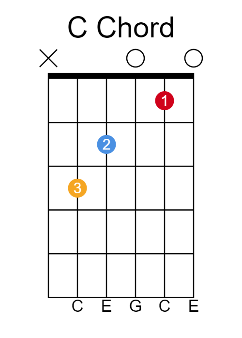
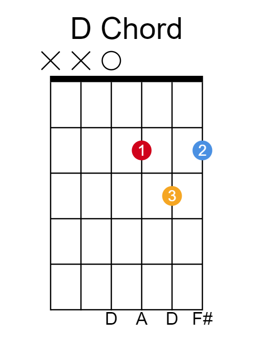
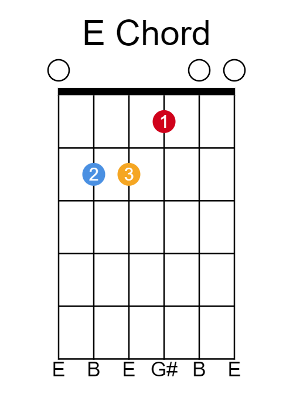
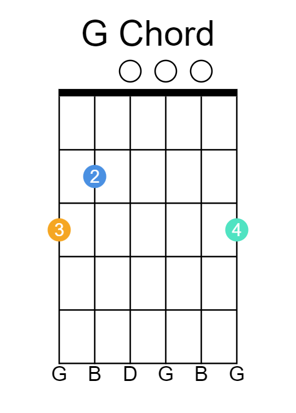

How to read chord diagrams
Have a look at the guitar. It's got 6 strings, with the thickest string at the top and the thinnest string at the bottom. Pick up your guitar as if you're going to play it. Now rotate it so you can see the strings. Notice how the thinnest string is now at the top. This is how to read chord diagrams. The chord diagrams are shown as if you are holding the guitar upside down.
The numbers represent what finger you will put on each string. If there is an X by the side of the diagram, this means we don't strum that string. An O means we strum it, even though we don't have a finger on that string.
Chord A: There are many ways to play an A chord. The best one to learn is this:
It might be tricky to cram your fingers into this way, at first, but this way is best for switching between chords.
This is a C chord:
This is a D chord:
This is an E chord:
This is a G chord:
